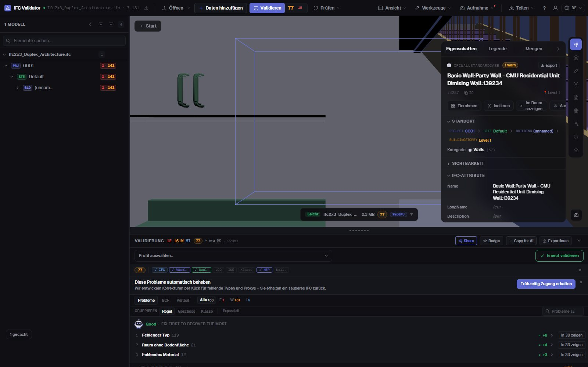
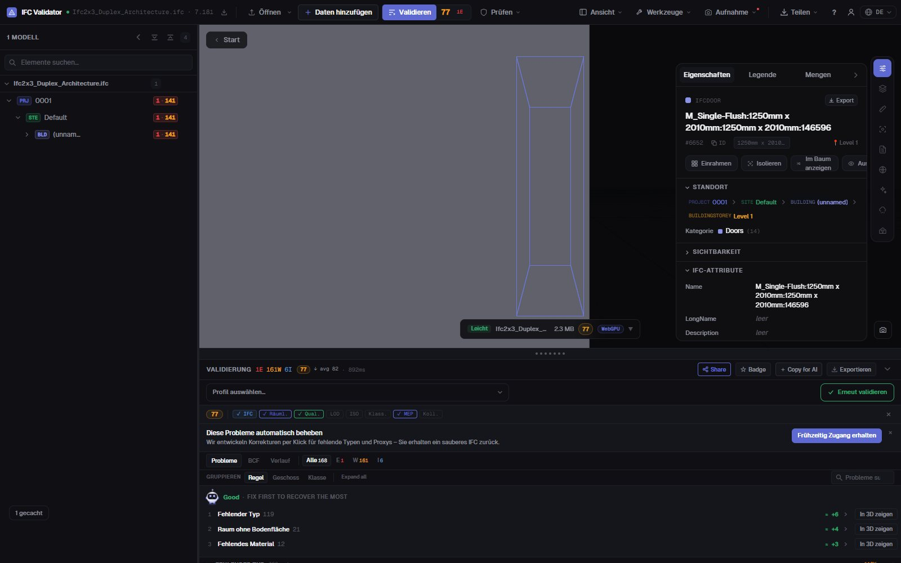

IFC Editor kostenlos
online im Browser
Öffnen Sie eine IFC-Datei, wählen Sie ein Element und ändern Sie, was falsch ist: Name, LongName, einen Eigenschaftswert oder das Geschoss. Jede Änderung lässt sich rückgängig machen, und das Ergebnis wird als Standard-IFC exportiert, das Ihr BIM-Werkzeug wieder öffnet. Die Datei verlässt Ihren Rechner nicht.
IFC-Datei bearbeiten — kostenlos →Ohne Konto · Kein Upload · Läuft im Browser · Kostenlos

Was Sie tun können
IFC bearbeiten ohne Revit, ArchiCAD oder Lizenz
Für die Korrekturen, die Sie sonst an den Autor zurückschicken: schnell, umkehrbar und als echtes IFC gespeichert.
Elemente umbenennen
Name und LongName jedes Elements ändern oder alle doppelten bzw. leeren Namen auf einmal mit einem Muster umbenennen ({class}, {storey}, {n}).
Eigenschaftswerte ändern
Den Wert jeder Eigenschaft ändern, die in den Eigenschaftssätzen des Elements bereits existiert (Pset_WallCommon, eigene Psets…).
GUIDs reparieren
Doppelte oder fehlerhafte GlobalIds mit einem Klick neu erzeugen — der häufigste Exportfehler.
Geschoss wechseln
Ein Element einem anderen räumlichen Container zuordnen, wenn es im falschen Geschoss exportiert wurde.
Alles rückgängig
Jede Änderung ist ein Befehl mit Rückgängig und Wiederholen; die Originaldatei bleibt bis zum Export unberührt.
IFC oder GLB exportieren
Das bearbeitete Modell als IFC (gleiches Schema wie das Original) oder als GLB für Web- und AR-Viewer herunterladen.
Screenshots

FAQ
Häufige Fragen
Gibt es einen kostenlosen IFC Editor online?
Ja. IFC Viewer Online ist für jede Nutzung kostenlos, auch kommerziell. Seite öffnen, .ifc-Datei ablegen und im Browser bearbeiten — ohne Installation, ohne Konto und ohne Upload, denn die Datei wird lokal per WebAssembly gelesen.
Was kann ich in einer IFC-Datei ändern?
Elementnamen (Name, LongName), Werte vorhandener Eigenschaften, GlobalIds und den räumlichen Container eines Elements. Viele Elemente lassen sich auf einmal umbenennen. Es ist kein Modellierwerkzeug: Geometrie wird nicht bearbeitet.
Öffnet sich das bearbeitete IFC in Revit, ArchiCAD oder Solibri?
Ja. Der Export schreibt ein Standard-IFC im Schema der geöffneten Datei (IFC2x3, IFC4, IFC4x3) mit Ihren Änderungen; jedes Werkzeug, das das Original las, liest auch die bearbeitete Datei.
Wird mein Modell irgendwo hochgeladen?
Nein. Lesen, Bearbeiten und Exportieren geschehen im Browser. In den DevTools sehen Sie, dass keine Anfrage die Datei enthält. Geeignet für NDA-Projekte und nach dem Laden auch offline.
Kann ich das Modell nach dem Bearbeiten prüfen?
Ja — dieselbe App prüft die Datei mit 44 Qualitätsregeln und zeigt einen Health Score von 0 bis 100, damit Sie sehen, wie er nach Ihren Korrekturen steigt.
Korrigieren Sie das IFC selbst — in einer Minute statt einer Schleife.
Umbenennen · Eigenschaften ändern · GUIDs reparieren · Rückgängig · IFC-Export
IFC-Datei bearbeiten — kostenlos →